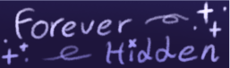
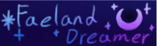

Welcome...
... to the hall of mirrors, where you are not to decide, for I am to judge.

Well, hello there! Looks like you somehow found my personal website, huh? Guess I should explain myself to you who probably is just a part of my imagination, then.
I'm Ghosty, also known as Yuki, Helen, and Helena. None of them are my actual name, so feel free to call me whatever you want.
I'm an Iranian artist, writer and you can sayyy an amateur programmer.. it's been 4 years since I last coded any website. I have a lot of interests! Twisted Wonderland, Servamp, Mouthwashing, Frieren, The Apothecary Diary, Witch Hat Atelier, Chainsaw Man, Alien Stage, The Amazing Digital Circus, Cookie Run Kingdom, Toilet-Bound Hanako-Kun, The Girl From The Other Side, Doki Doki Literature Club, Takopi's Original sin, Sally Face, Fran Bow, Little Misfortune, Genshin Impact, Honkai: Star Rail, Project Sekai, Omori, No I'm Not Human, The Case Study of Vanitas, Yume Nikki and pretty much all YNFG, Phantom of The Opera, Eternal Senia, Spy X Family, Your Lie in April, Dungeon Meshi, Vocaloid, Musics, Creepypasta (yes, I exist, hello), Alter Ego, Stray cat doors, Needy Streamer Overload, Bongu Stray Dogs, Jujutsu Kaisen, Infinity Nikki, And well... pretty much anything and everything else! However, my greatest, eternal pride and joy and interest are forever me And my friends' OCs!! In fact, this whole website is themed after my 2 sonas, [Ghosty] and Goddess.
My pronouns are she/they, I'm aroace and I was born in January 22nd, 2009. I keep getting maternal over fictional characters clearly older than me, some examples are: Pierrot, Shadow Milk Cookie, Matcha, Scaramouche, Amane.. clearly guys with mental illnesses and lonliness, ok. My favorite colors are blue, purple, pink and black! I also have my socials linked, and they're all actually linked in those eye images up there!! Crazy, I know. I'm an INTP and the bestest thing in the world are cats and well um, yea, that's everything about me! Author biography over, pack it up you guys/j
Now, you may wonder, what is this page about? This is a place where I have archived all informations about my OCs, so learning about them is MUCH easier. If you're also seeing an art archive, well, then it means I felt motivated enough to actually put all my drawings and fanarts, as well.
My current stories are: Satanic, Forever Hidden, Hush, Scarlet, Faeland Dreamer, and some other works!! Feel free to check them out!!
OR you can just chill and rock some ghosy-approved music, or try playing a minigame by clicking on the cross at the bottom of the page :D
Enjoy! (please i worked sm on this...)




